Trees
- This article is about non-fruit trees. For Fruit Trees, see the Fruit Trees page.
Trees that do not yield fruit are of two types: common and special. Common trees (Maple, Oak, Pine, and Mahogany) are valuable natural resources, being the primary source of multiple products: Wood for construction and crafting, Sap, Maple Syrup, Oak Resin, and Pine Tar. Special trees have their own unique characteristics.
Common Trees
Harvesting
A mature tree (stage 5) can be shaken for a seed (see Growth Cycle), tapped for syrup, or felled by chopping it repeatedly with an Axe. When chopped down, trees always fall left or right away from the player (if applicable) and produce wood or seeds in the direction of the fall. When chopped from above or below, the player should try to stand off-center on the tile to clearly ensure the direction. If the tree is adjacent to a wall, hug the wall to ensure it falls into playing space. If the tree falls into or near water, the items it drops may disappear into the water. High Magnetism is very helpful for quickly collecting the widely-scattered products. The products (not including those from the stump) are:[1]
 Wood (12-16), except Mahogany trees. The possible 4 bonus pieces of wood are randomly added, based on Luck and Foraging skill. For players with the Forester profession, the amounts are 25% larger (i.e., 15-20 pieces). If a player has read Woody's Secret, there is a 5% chance to double the amount of wood dropped (i.e., 24-32 pieces normally or 30-40 pieces with the profession).
Wood (12-16), except Mahogany trees. The possible 4 bonus pieces of wood are randomly added, based on Luck and Foraging skill. For players with the Forester profession, the amounts are 25% larger (i.e., 15-20 pieces). If a player has read Woody's Secret, there is a 5% chance to double the amount of wood dropped (i.e., 24-32 pieces normally or 30-40 pieces with the profession). Hardwood (10) for Mahogany trees. For players with the Forester profession, the amounts are 25% larger (i.e., 12 or 13 pieces).
Hardwood (10) for Mahogany trees. For players with the Forester profession, the amounts are 25% larger (i.e., 12 or 13 pieces). Sap (5)
Sap (5) Maple Seed (0-2),
Maple Seed (0-2),  Acorn (0-2),
Acorn (0-2),  Pine Cone (0-2) or
Pine Cone (0-2) or  Mahogany Seed (0-1), depending on tree species. These are in addition to the 1 possible "loose" seed that may fall when shaking the tree. All seeds are only possible if Foraging skill is at least 1.
Mahogany Seed (0-1), depending on tree species. These are in addition to the 1 possible "loose" seed that may fall when shaking the tree. All seeds are only possible if Foraging skill is at least 1.- Hardwood, if the player has the Lumberjack profession. The amount of wood is random: 50% chance for 0 pieces; 25% 1; 12.5% 2; 6.25% 3; 3.125% 4; etc. (without any fixed maximum number).
- 12 Foraging experience points.
When tapped, a tree cannot be chopped down or shaken for a seed, unless the tapper is first removed. (However, if the tree is moss-covered, you can shake it without removing the tapper by using a scythe or weapon on the tree.)
A stump is left behind after a mature tree is chopped down. Removing the stump with an Axe yields:[2]
At stage 4, tree seedlings can be chopped down with an Axe. Products are:[3]
At stages 2 and 3, tree seedlings can be removed using an Axe, Hoe, Pickaxe, Scythe, or Weapon. If an Axe is not used, no products are dropped.[4]
- Wood (1) may be dropped if an Axe is used. The percent chance is ten times the player's Foraging level (i.e., guaranteed at level 10), including Buffs.
At stage 1, tree seeds can be removed from the ground using an Axe, Hoe, or Pickaxe if the player is Foraging level 1 or higher. The only product is the seed.
Moss
Moss is found growing on Maple Trees, Oak Trees, Pine Trees, and two types of Green Rain Trees during all seasons apart from Winter. Moss is on most trees during the Green Rain weather event. Trees do not have to be chopped down to harvest Moss; it can be harvested with one use of any tool. Each tree will drop 1-2 Moss.
Growth Cycle
Each day, there is a 5% chance that a mature tree will generate a "loose" seed. This seed will be dropped if the player shakes the tree. Normally the loose seed matches the mature tree species, with one exception: for the last two weeks of Fall, shaking a Maple Tree produces a Hazelnut instead of a Maple Seed.[5] Note that the player must reach Foraging Level 1 and sleep to view the level-up screen before seeds from chopping down trees will be available. Seeds from shaking trees become available as soon as the player levels up.
In addition, mature trees (excluding stumps) on the farm have a 15% chance each night of trying to spontaneously plant one seed in the ground.[6] One tile is randomly chosen, up to 3 tiles away from the parent tree in any direction. The seed becomes "planted", creating a new stage 1 tree, only if the tile is a valid location for a new tree. In particular, the chosen tile must be empty; trees will not destroy paths or crops.
Planted seeds grow through four stages before reaching maturity. Tree seeds do not require watering, nor do they require the surrounding land to be empty (unlike Fruit Trees): the land can be fully paved; trees can be planted next to water or other features. As long as the seed can be placed in the ground, it can grow. The only limitation on tree seedling growth is that two mature trees cannot be side by side: a seedling will never grow past stage 4 if there is a mature tree in any of its eight adjacent tiles.
With Tree Fertilizer, trees will grow one stage every night, except at stage 4, which takes two days (Mahogany trees usually take longer). In total, a fertilized non-Mahogany seed takes five days to reach maturity. Fertilized seeds and seedlings will grow even in Winter. Otherwise, with the exception of trees in the Desert and on Ginger Island, trees do not grow at all in winter.
Without fertilizer, seedlings have a 20% chance (15% for Mahogany trees) each night of growing to the next stage, except at stage 4, where seedlings spend twice as long. The median growth time from non-Mahogany seed to maturity is 24 days, although individual tree growth times will vary considerably. Statistically, 90% of non-Mahogany seeds should reach maturity in 38 days (excluding winter), and 99% in 55 days.
Having reached stage 5 maturity, the tree continues growing up to stage 15 with the base change of 20% (15% for Mahogany) for the purpose of Moss growing. Additionally, if it has a fully grown Green Rain Tree (Type 1 or 2) in a 5x5 square centered around itself, it has an additional check of 50% for a growth stage increase after stage 5. [7]. Collecting Moss reduces the growth stage to 12 - amount of moss dropped in the stack. [8].
Outside the Farm
Common trees in Cindersap Forest, The Mountain, Railroad, Quarry, Bus Stop and Backwoods can all be chopped down, tapped, or shaken for a seed, as can the trees in Town east of the river. The trees in Town west of the river cannot be chopped down or tapped, but can be shaken for a seed.
Outside the farm, trees never spontaneously spread planted seeds. However, the player can plant seeds in any tillable ground (as long as the ground is un-tilled), which will go through the standard growth stages.
Any pre-existing trees that are chopped down outside the farm, and the stumps removed, have a 20% chance per night of reappearing as a stage 3 seedling (even in winter). After reappearing, it will grow as normal into a mature tree. If the stump is not removed, the tree will not regrow.
Lightning
Unlike Fruit Trees, which produce Coal for 3-4 days after being hit by lightning, common trees hit by lightning are destroyed, leaving only a stump (and some wood or sap) behind.
Oak Tree
Oak Trees grow from  Acorns. When tapped, they yield
Acorns. When tapped, they yield  Oak Resin every 7 days (or 3 days with the Heavy Tapper).
Oak Resin every 7 days (or 3 days with the Heavy Tapper).
Oak trees that are not in Pelican Town or the Greenhouse may turn into Green Rain Trees in Fall and will not return to normal until the next Spring. If a tapper is placed on the tree, this change will not occur. [9].
| Stage 1 | Stage 2 | Stage 3 | Stage 4 | Stage 5 - Spring, Summer, Fall, Winter | Stump - Spring, Summer, Fall, Winter |
|---|---|---|---|---|---|
 |
Maple Tree
Maple Trees grow from  Maple Seeds. When tapped, they yield
Maple Seeds. When tapped, they yield  Maple Syrup every 9 days (or 4 days with the Heavy Tapper). Maple trees have a chance to drop a Hazelnut during the last 2 weeks of Fall.
Maple Syrup every 9 days (or 4 days with the Heavy Tapper). Maple trees have a chance to drop a Hazelnut during the last 2 weeks of Fall.
Maple Syrup is the most profitable of the 3 types of common tree syrup.
Maple trees that are not in Pelican Town or the Greenhouse may turn into Green Rain Trees in Fall and will not return to normal until the next Spring. If a tapper is placed on the tree, this change will not occur. [9].
| Stage 1 | Stage 2 | Stage 3 | Stage 4 | Stage 5 - Spring, Summer, Fall, Winter | Stump - Spring, Summer, Fall, Winter |
|---|---|---|---|---|---|
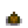 |
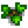 |
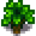 |
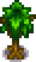 |
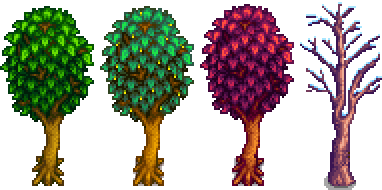 |
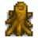 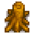 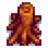 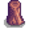 |
Pine Tree
Pine Trees grow from  Pine Cones. When tapped, they yield
Pine Cones. When tapped, they yield  Pine Tar every 5 days (or 2 days with the Heavy Tapper).
Pine Tar every 5 days (or 2 days with the Heavy Tapper).
| Stage 1 | Stage 2 | Stage 3 | Stage 4 | Stage 5 - Spring, Summer, Fall, Winter | Stump - Spring, Summer, Fall, Winter |
|---|---|---|---|---|---|
 |
Mahogany Tree
Mahogany Trees grow from  Mahogany Seeds. When tapped, they yield
Mahogany Seeds. When tapped, they yield  Sap every day, with both normal Tapper and Heavy Tapper.
Sap every day, with both normal Tapper and Heavy Tapper.
| Stage 1 | Stage 2 | Stage 3 | Stage 4 | Stage 5 - Spring, Summer, Fall, Winter | Stump - Spring, Summer, Fall, Winter |
|---|---|---|---|---|---|
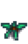 |
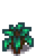 |
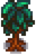 |
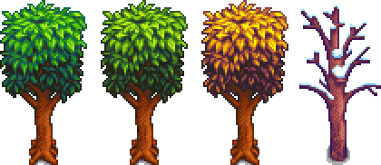 |
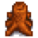 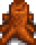 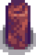 |
Special Trees
Special trees have uncommon properties and yields.
Palm Tree
Palm Trees do not drop any seeds, so they cannot be planted by the farmer and are only found in The Calico Desert and on Ginger Island. Palm Trees may occasionally drop a Coconut (and can also drop a Golden Coconut if the tree is on Ginger Island) when chopped down or shaken. They cannot be tapped.
| Stage 1 | Stage 2 | Stage 3 - Desert / Island | Stump |
|---|---|---|---|
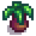 |
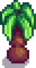 |
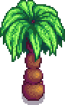 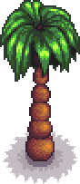 |
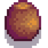 |
Mushroom Tree
Mushroom Trees grow from  Mushroom Tree Seeds. Mushroom Trees are a rare occurrence on the farm. Each Fall, there is a chance for a fully grown untapped common tree (or stump) to change into a Mushroom Tree (or stump) during the night. A Mushroom Tree can also be grown from a Mushroom Tree Seed. These seeds do not fall from Mushroom Trees when shaken or chopped - they can only be obtained from Qi's Walnut Room or from seeds spread from them. They yield Red or Purple Mushrooms when chopped down. They can be tapped and will yield
Mushroom Tree Seeds. Mushroom Trees are a rare occurrence on the farm. Each Fall, there is a chance for a fully grown untapped common tree (or stump) to change into a Mushroom Tree (or stump) during the night. A Mushroom Tree can also be grown from a Mushroom Tree Seed. These seeds do not fall from Mushroom Trees when shaken or chopped - they can only be obtained from Qi's Walnut Room or from seeds spread from them. They yield Red or Purple Mushrooms when chopped down. They can be tapped and will yield  Common,
Common,  Red, and
Red, and  Purple mushrooms over time.
Purple mushrooms over time.
Mushroom Trees hit by lightning will be reduced to a stump and leave mushrooms behind, in the same way as common trees leave wood/sap behind. If the stump is left alone, the following Spring, it will regrow.
| Stage 1 | Stage 2 | Stage 3 | Stage 4 | Stage 5 | Stump |
|---|---|---|---|---|---|

|
Mystic Tree
Mystic Trees grow from  Mystic Tree Seeds. Mystic Trees are not native to the Valley; they grow only if planted by the farmer. When tapped, they yield
Mystic Tree Seeds. Mystic Trees are not native to the Valley; they grow only if planted by the farmer. When tapped, they yield  Mystic Syrup every 7 days (or 3 days with the Heavy Tapper). When chopped with an axe, they yield Hardwood.
Mystic Syrup every 7 days (or 3 days with the Heavy Tapper). When chopped with an axe, they yield Hardwood.
| Stage 1 | Stage 2 | Stage 3 | Stage 4 | Stage 5 | Stump |
|---|---|---|---|---|---|
 |
Green Rain Trees
Green Rain Trees grow from 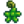
Type 1
Some appear with moss, while others do not. They cannot be tapped.
| Stage 1 | Stage 2 | Stage 3 | Stage 4 | Stage 5 - Spring, Summer, Fall, Winter | Stump - Spring, Summer, Fall, Winter |
|---|---|---|---|---|---|
 |
Type 2
Some appear with moss, while others do not. They cannot be tapped.
| Stage 1 | Stage 2 | Stage 3 | Stage 4 | Stage 5 - Spring, Summer, Fall, Winter | Stump - Spring, Summer, Fall, Winter |
|---|---|---|---|---|---|
 |
Type 3
When chopped down with an axe, they drop Fiddlehead Ferns. When tapped, they yield  Fiddlehead Fern (1) every 2 days (or 1 day with the Heavy Tapper).
Fiddlehead Fern (1) every 2 days (or 1 day with the Heavy Tapper).
| Stage 1 | Stage 2 | Stage 3 | Stage 4 | Stage 5 - Spring, Summer, Fall, Winter | Stump - Spring, Summer, Fall, Winter |
|---|---|---|---|---|---|
 |
References
- ↑ See Tree::extraWoodCalculator and Tree::tickUpdate in the game code.
- ↑ See Tree::extraWoodCalculator and Tree::performTreeFall in the game code.
- ↑ See Tree::performBushDestroy in the game code.
- ↑ See Tree::performSproutDestroy in the game code.
- ↑ See Tree::shake and Tree::dayUpdate in the game code.
- ↑ See Tree::dayUpdate in the game code.
- ↑ See Tree::dayUpdate in the game code.
- ↑ See Tree::performToolAction in the game code.
- ↑ 9.0 9.1 See Tree::seasonUpdate in the game code.
History
- 1.1: You can no longer tap a stump, and trees no longer say "Wrong Season" message.
- 1.3.27: Breaking small tree stumps now provides +1 Foraging XP.
- 1.4: Fixed bug that caused a stage 2-3 sapling to make a scythe sound when watered. Fixed bug that prevented trees from dropping seeds and seeds disappearing when harvested if a Foraging level up occurred during the day. Planting tree seeds outside the farm no longer requires the spot to be tilled. (This also prevents planting in non-tillable areas dug up by Artifact Spots in Winter).
- 1.5: Added Mahogany Tree.
- 1.6: Added Mystic Tree and the Green Rain Trees. Fixed tree stumps dropping seeds like full-grown trees. Reading Woody's Secret has a chance to double wood output from trees. Maple and Oak trees now have a chance to turn into Green Rain Trees and lose their leaves in the fall. Trees planted in the Desert will now grow during Winter without Tree Fertilizer.
- 1.6.3: Added extended growth stages explanation to the growth cycle, explanation to growth change after collecting.
| Trees | |
|---|---|
| Trees | Green Rain Trees • Mahogany Tree • Maple Tree • Mushroom Tree • Mystic Tree • Oak Tree • Palm Tree • Pine Tree |
| Fruit Trees | Apple Tree • Apricot Tree • Banana Tree • Cherry Tree • Mango Tree • Orange Tree • Peach Tree • Pomegranate Tree |
| Seeds | Acorn • Mahogany Seed • Maple Seed • Mossy Seed • Mushroom Tree Seed • Pine Cone • Mystic Tree Seed |
| Fruit | Apple • Apricot • Banana • Cherry • Mango • Orange • Peach • Pomegranate |
| Misc | Large Log • Large Stump • Tea Bush |